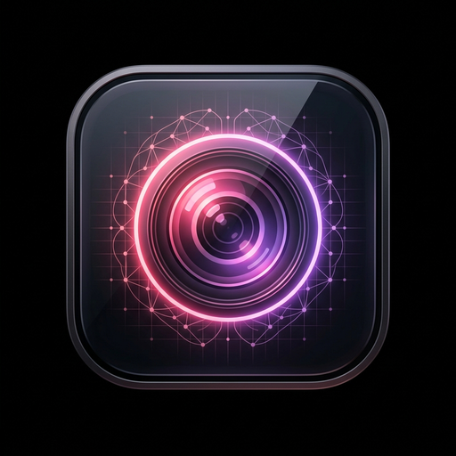
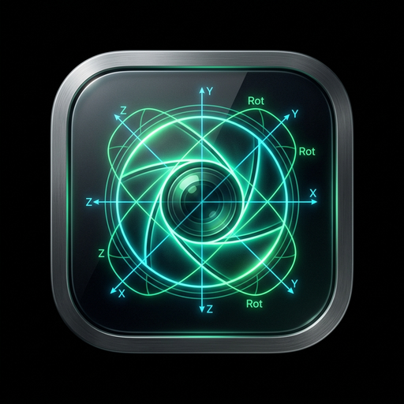
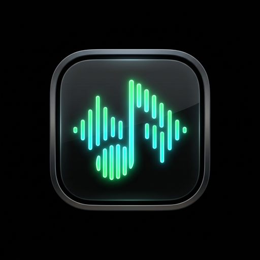

CHUS BZN //
CINE · TELEVISIÓN · SONIDO · IA
CHUS BZN es una productora audiovisual y tecnológica en Barcelona. Cine, televisión, sonido e integración de IA aplicados a la comunicación de PYMES y marcas.
«Creatividad + Lógica = Resultados. Tu comunicación merece verse y escucharse bien.»
¿Buscas una productora audiovisual y tecnológica en Barcelona para tu empresa? Cuéntanos tu proyecto y te proponemos un plan a medida, con presupuesto claro y en tu idioma.
Ecosistema IA & Prototipado

Studio Pro Suite
v1.0.0 Stable // Electron + ReactEcosistema modular de escritorio para edición avanzada de vídeo, procesamiento masivo de imágenes y consola DAW de masterización.

Cine Station Pro
v1.0.0 Stable // FastAPI + FFmpegPipeline cinematográfico acelerado para inyección dinámica de LUTs profesionales (.cube), colorimetría en tiempo real y transcodificación de alta eficiencia.

Brand Music Curator
v1.0.0 Stable // LLM MultimodalMotor de curación musical asistido por IA para estrategias de identidad sonora, locuciones neuronales y playlists comerciales.
Casos de Estudio Destacados
Despliegue de un flujo de trabajo híbrido integral donde la IA actúa como vector de aceleración en la generación de entornos visuales dinámicos, diseño conceptual de personajes y continuidad de guion optimizado para distribución masiva.
Flujo forense de audio para clonación vocal neural autorizada sobre cintas analógicas y masters históricos, con blindaje de derechos AISGE.